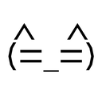
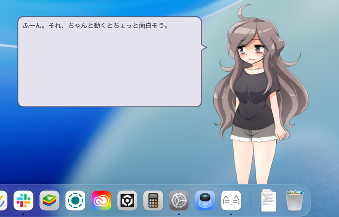

A two-way conversation
Click, pet, or choose a reply. Each ghost has its own conversations and reactions, shown in speech balloons.

UKAGAKA, ON YOUR MAC.
A little company for your desktop.
They chat, change outfits, and sometimes ask for a little attention. Bring Ukagaka’s desktop characters to your Mac.
Get started on MacmacOS 14 or later · Apple Silicon / Intel

Made for macOSSupported engines run natively
A character included from the startMeet Ria, with a dialogue balloon included
Compatibility in progressNot a complete replacement for SSP
01 / EVERYDAY COMPANY
A “ghost” is a Ukagaka character and its dialogue. Utatane gives it a place on your desktop. Ria is a character included with the app, so you can try it without finding a ghost first.
Click, pet, or choose a reply. Each ghost has its own conversations and reactions, shown in speech balloons.
Switch shells and balloons, and adjust their size. Supported ghosts also offer animations and different outfits.
Install a distributed NAR file, or import ghosts and balloons from an extracted SSP folder.
02 / BEFORE YOU BRING YOUR GHOST
Even ghosts using the same engine can depend on different features. Check the current support before bringing over a favorite.
03 / MAKE YOURSELF AT HOME
Get Utatane-macOS.zip from the latest release. It supports both Apple Silicon and Intel Macs.
Unzip the download and move Utatane.app to your Applications folder.
Open Utatane to display Ria, the included character. You can add other ghosts later.
Current development builds are unsigned. Verify the download source, try opening the app once, then allow it in System Settings → Privacy & Security.
Alternatively, move the app to Applications, then run the following command in Terminal.
sudo xattr -rc "/Applications/Utatane.app"This recursively removes extended attributes, including quarantine, from Utatane.app. Use it only for an app obtained from the official distribution source that you trust. It does not verify the app’s signature or safety.
04 / A FEW MORE THINGS
Ukagaka is a system and culture for keeping characters on your desktop and enjoying their dialogue and reactions. The host app is called baseware; a character and its dialogue form a ghost; its appearance is a shell; and its speech window is a balloon. Utatane is baseware for macOS.
Supported YAYA (AYA), KAGARI, SHIOLINK (MiyoJS, etc.), SATORI, KAWARI, MISAKA, AKARI, ese-shiori, NiseShiori, and Shino run natively. Ghosts that depend on additional Windows DLLs may still need Wine.
The supported version of Materia’s first can run without Wine through a dedicated dialogue-data reader. It is not bundled; you need your own legitimately obtained files. This is not general-purpose Windows DLL execution.
The app and this page support Japanese, English, Simplified Chinese, Traditional Chinese, and Korean. Ghost dialogue stays in the author’s language and is not automatically translated.
Please report the ghost’s name, your Utatane version, and what happened on GitHub Issues. Compatibility is still evolving, including rendering, text encoding, and events.